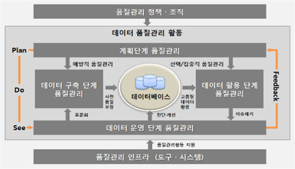

데이터 품질 및 품질관리의 정의
"데이터 품질(Data Quality)"이란 "데이터의 최신성, 정확성, 상호연계성 등을 확보하여 이를 사용자에게 유용한 가치를 줄 수 있는 수준"으로 정의할 수 있습니다. 이러한 데이터 품질을 사용자 관점에서 지속적으로 유지하거나 향상시키기 위해서는 체계적인 관리와 활동이 필요합니다. 따라서 "데이터 품질관리(Data Quality Management)"란 사용자에게 유용한 가치를 제공하도록 "데이터의 품질을 확보하기 위한 품질 목표 설정, 품질 진단 및 개선 등 일련의 활동과 이를 지원하기 위한 관련 도구"를 의미합니다.
일반적으로 데이터 품질관리는 데이터 구축 이후 운영 및 활용단계에서 이루어지는 업무로 인식되어 왔으나 범정부 차원의 공공기관 품질 진단 사업 등의 결과를 살펴보면, 주요 품질 이슈에 대한 원인이 데이터의 운영 및 활용 단계를 포함한 정보시스템 구축 단계의 품질관리 활동 부재에서도 그 원인을 찾을 수 있습니다. 공공기관이 품질관리 활동을 수행함에 있어 아래의 품질관리 개념도처럼 데이터의 구축부터 운영, 활용까지의 정보 생명주기(Life Cycle)를 고려하여 전 단계에 걸쳐 적용되는 체계를 확보하도록 데이터 품질관리를 체계화 하여야 합니다.
1. 데이터 품질관리 거버넌스 구성 요소
공공기관의 데이터 품질관리는 '정책·조직', '단계별 활동', 그리고 '품질관리 인프라'라는 세 가지 주요 구성 요소로 이루어집니다.
데이터 품질관리 활동 체계는 data-quality-mgmt.png 파일의 그림으로 PDCA의 기본 프레임워크가 제시되고 있습니다.
출처: 공공데이터포털(data.go.kr)
1.1 품질관리 정책·조직
정책: 품질관리 활동을 수행하기 위한 기관 차원의 원칙, 목적, 목표, 전략 등을 규정한 문서를 의미하며, 기관의 비전과 임무 달성을 위한 전략적 수단으로 활용됩니다. 품질관리 활동의 정책적 방향성과 추진 체계를 정의합니다. 품질관리 정책은 국가 차원의 정보화 정책 방향 및 데이터 품질관리 정책과 일관성을 갖도록 수립되어야 합니다.
조직: 품질관리 활동을 누가(Who) 할 것인지 정의하며, 역할과 책임을 명확히 하여 규정된 활동을 수행하기 위한 조직 체계 및 담당 역할을 정의하는 것입니다. 기관 차원의 데이터 품질관리를 총괄하는 총괄 책임자를 선정해야 하며, 업무 효율성을 위해 품질관리 조직 또는 담당자를 지정해야 합니다. 또한, 주요 사항을 심의하고 부서 간 협의를 조정하기 위한 품질관리 협의회 등을 운영할 수 있습니다.
1.2 단계별 데이터 품질관리 활동
계획, 구축, 운영, 활용으로 구성되는 데이터 생명주기 전 단계에 걸쳐 적용되는 활동 체계입니다. (자세한 내용은 2절에서 설명됩니다.)
1.3 품질관리 인프라
품질관리 활동을 효과적으로 수행하기 위해 이를 지원하는 도구 및 시스템을 의미합니다. 이는 품질관리 활동을 어떻게(How) 수행할 것인지에 대한 것으로, 전문적인 품질진단 소프트웨어(Solution)나 메타데이터관리시스템(Meta Data Management System) 등이 포함될 수 있습니다. 인프라의 주요 기능으로는 프로파일링 기능, 품질 데이터 관리 기능, 품질 진단·분석 기능, 품질관리 프로세스 지원 기능, 메타데이터 관리 기능 등이 있습니다.
2. 공공데이터 품질관리의 주요 단계별 활동
공공데이터 품질관리 활동은 정보 생명주기(Life Cycle)에 기반하여 4단계로 구분되며, 각 단계별 주요 활동은 다음과 같습니다.
| 단계 | 목적 및 목표 | 주요 활동 |
|---|---|---|
| 계획단계 | 기관 차원의 품질관리 활동 수행을 위한 연간 질관리 계획 수립. | 품질관리 목표 정의 및 중점 데이터베이스 품질관리 대상 선정. 품질 진단 및 개선 계획 수립. 표준화 적용 방안 및 연계 데이터 품질 확보 방안 수립. |
| 구축단계 | 사전 예방적 품질관리 확보. | 데이터 표준화 (코드, 데이터사전, 도메인, 명명규칙 등). 데이터 구조의 일관성 확보 및 오류 데이터 입력 방지. 연계 데이터 정합성 관리. 데이터베이스 구축 관련 산출물 관리. |
| 운영단계 | 품질 이슈 중심의 선택·집중형 품질관리를 통한 품질 수준 제고. | 데이터 품질 진단 및 개선 (6단계 절차: 정의, 실시, 분석, 개선계획 수립, 수행, 통제). 품질관리 관련 산출물 점검 및 최신성 확보. 데이터 오너십(Ownership) 및 스튜어드십(Stewardship) 관리. |
| 활용단계 | 사용자들의 품질 오류 신고 관리 및 데이터 활용 성과 평가. | 데이터 품질 오류 신고 관리 (접수, 처리, 조치 결과 통보). 데이터 활용 성과 평가 및 품질 목표 재조정. |
주요 활동 세부 내용 (운영단계 중심)
특히 운영단계의 핵심 활동인 데이터 품질 진단 및 개선 절차는 다음과 같은 6단계로 정의됩니다:
진단대상 정의
(Define)
품질 이슈 조사 및 현황 분석을 통해 진단 대상 데이터베이스를 선정하고 진단 방향성을 정의합니다.
품질진단 실시
(Measure)
준비된 환경에서 프로파일링, 업무규칙 진단, 체크리스트 등의 진단 기법을 적용하여 데이터 값, 구조, 표준 및 관리 수준을 측정합니다.
진단결과 분석
(Analyze)
도출된 품질 문제에 대해 오류 원인을 분석하고, 이 품질 문제가 업무에 미치는 업무 영향 분석을 수행하며, 근본 원인을 제거하기 위한 개선 기회를 도출합니다.
개선계획 수립
(Improvement Plan)
진단 결과 분석을 기반으로 개선 과제를 정의하고 우선순위를 설정하며, 품질개선 전략을 수립하여 구체적인 추진 계획서를 작성합니다.
개선수행
(Implement)
수립된 계획에 따라 품질개선 환경을 준비하고, 품질 관리체계 수립, 표준화 수립, 데이터 보정 등 영역별로 실제 개선 활동을 수행합니다.
품질통제
(Control)
개선 사업의 효과에 대한 결과 평가를 실시하고, 지속적인 품질 유지를 위한 품질 목표 관리 및 품질통제 활동 (모니터링, 교육, 홍보 등)을 수행하는 단계입니다.
마치 건물을 짓고 관리하는 과정과 유사합니다. 거버넌스 구성 요소는 '건축 정책 및 팀(정책/조직)', '건축 공정 단계(단계별 활동)', 그리고 '건축 장비(인프라)'로 볼 수 있습니다. 단계별 활동 중 '계획'은 설계도를 그리고, '구축'은 설계도대로 건물을 짓는 것이며, '운영'은 건물의 문제점을 진단하고 고치는 활동(품질 진단 및 개선)이며, '활용'은 건물을 사용하는 사람들의 피드백을 받아 개선하는 창구(품질 오류 신고 관리)와 같습니다.
3. 품질관리 도구 및 인프라
공공데이터 품질관리를 '품질관리 도구(Tool)' 및 '인프라(Infrastructure)' 관점에서 설명드리겠습니다. 품질관리 도구는 공공데이터 품질관리 거버넌스를 구성하는 핵심 요소이자, 단계별 활동, 특히 품질 진단 및 개선 활동을 효율적으로 수행하도록 지원하는 필수적인 기술적 기반입니다.
3.1 품질관리 거버넌스에서의 인프라 (도구) 구성 요소
공공기관의 데이터 품질관리는 '정책·조직', '단계별 활동', 그리고 '품질관리 인프라'라는 세 가지 주요 구성 요소로 이루어집니다. 이 중 품질관리 인프라는 활동을 효과적으로 수행하기 위해 도입되는 도구 및 시스템을 의미하며, 품질관리 활동을 어떻게(How) 수행할 것인가에 해당합니다.
인프라 도입 및 운영 계획
- 필요성: 공공데이터의 지속적인 증가와 기관 간 연계 및 활용 강화 추세를 고려할 때, 수작업만으로는 품질 수준을 유지하고 향상시키는 데 한계가 있으므로 인프라 도입이 필요합니다.
- 도입 형태: 인프라는 일반적으로 솔루션 형태로 도입되지만, 기관의 환경과 여건에 따라 자체 개발을 통해 구축할 수도 있습니다.
- 고려 사항: 품질관리 인프라는 기관의 정보화 여건, 데이터베이스 규모, 품질관리 필요성에 대한 전 구성원의 공감대 형성, 의사결정권자의 후원 등을 고려하여 단계적으로 도입해야 하며, 일괄적인 도입은 실패 가능성이 높습니다.
3.2 품질관리 인프라 (도구)의 주요 기능
품질관리 인프라(품질·표준관리 통합시스템, 메타데이터관리시스템 등)는 품질관리 활동을 효과적으로 지원하기 위해 다음과 같은 주요 기능들을 갖추어야 합니다:
3.2.1 프로파일링 기능
프로파일링 기능은 품질관리 인프라의 가장 고유하면서도 핵심적인 기능으로, 데이터의 구조 또는 값에 대한 기술적인 분석을 수행하는 기능입니다.
- 이 기능에는 컬럼 분석, 날짜 분석, 코드 분석, 참조무결성 분석, 패턴 분석 등의 세부 분석 기능을 포함합니다.
- 프로파일링의 범위는 데이터의 형태나 품질관리 목표에 따라 차이가 있을 수 있으므로, 기관의 목표 등을 고려하여 세부 기능을 정의해야 합니다.
3.2.2 품질 데이터 관리 기능
품질 데이터 관리 기능은 품질 진단 활동을 위한 기준과 대상이 되는 정보들을 관리하는 기능입니다.
- 품질 진단 기준은 품질 측정을 위한 기준이 되는 품질 지표를 의미하며, 품질 대상은 품질 수준 측정 및 향상의 대상이 되는 핵심 데이터 및 업무규칙(BR; Business Rule) 등을 의미합니다.
- 이 기능은 품질 지표 관리, 업무규칙(BR) 관리, 품질 진단 대상 관리, 품질 목표 및 가중치 관리, 품질 데이터 이력관리 등의 세부 기능을 포함합니다.
3.2.3 품질 진단·분석 기능
품질 진단·분석 기능은 품질 데이터 관리 기능에서 정의한 품질지표 및 업무규칙을 기반으로 실제 데이터를 진단하고, 측정 결과를 분석하여 보고서 등의 형태로 제공하는 기능을 의미합니다.
- 주요 세부 기능으로는 진단 작업 스케쥴링, 진단 모니터링, 오류 데이터 추출, 품질 진단 실행 이력관리 기능 등을 포함합니다.
- 또한, 품질 분석에 따른 프로파일링 보고서, 오류 결과 보고서, 품질 현황 보고서, 개선 추이 보고서 등 다양한 보고서 제공 기능을 포함합니다.
3.2.4 메타데이터 관리 기능
메타데이터 관리 기능은 품질관리 시스템을 효율적으로 활용하고 운영하기 위해 기관 차원의 데이터 표준을 관리하는 데 필요한 기능입니다.
- 이 기능은 기관 차원의 코드, 데이터사전, 도메인, 명명규칙 등 데이터 표준, 데이터 모델 정보 및 데이터베이스 정의 내역 등을 통합적으로 관리합니다.
- 모델링 도구(Case Tool)와의 연계를 통해 변경 관리 자동화 및 표준화 결과 배포 기능을 지원할 수 있으며, 품질관리 시스템에 포함되거나 별도의 시스템으로 구축되어 연계될 수 있습니다.
3.2.5 품질관리 프로세스 지원 기능
품질관리 프로세스 지원 기능은 기관의 품질관리 활동 체계에 따른 업무 프로세스 처리를 위한 기능을 의미합니다.
- 이는 품질 지표, 업무규칙(BR), 오너십 관리 등에 대한 신규 등록, 변경 요청 및 승인 처리 등의 기능을 포함하여 품질관리 활동을 위한 업무 절차를 지원합니다.
3.2.6 관리자 기능
관리자 기능은 품질관리 인프라를 사용하거나 관리하는 사용자에 대한 관리 및 권한 관리 등을 의미합니다.
- 세부적으로는 사용자 관리, 접속 현황 및 이력 관리, 사용자 접근 권한 관리 등의 기능을 포함합니다.
3.3 단계별 품질관리 활동에서 도구의 활용
데이터 품질관리의 4단계 (계획, 구축, 운영, 활용) 활동 중 도구(인프라)는 특히 계획단계와 운영단계의 진단 활동에서 중요하게 사용됩니다.
가. 계획단계 품질관리 (인프라 구축/운영 계획 수립)
계획단계에서는 품질관리 인프라 구축·운영 계획을 수립해야 합니다. 이 계획에는 인프라 도입 내역(H/W, S/W, N/W 등), 소요 예산, 설치 장소, 도입 일정 및 구분 등이 포함됩니다.
나. 구축단계 품질관리 (산출물 관리 지원)
구축단계에서 데이터 품질 관련 산출물(표준용어 정의서, 엔터티 정의서 등)을 체계적으로 작성하고 관리해야 합니다. 특히, 운영 중인 데이터베이스의 규모가 크고 복잡할 경우, 메타데이터 관리시스템을 도입하여 산출물을 통합적으로 관리하는 것이 효율적일 수 있습니다.
다. 운영단계 품질관리 (도구를 이용한 품질 진단 및 개선)
운영단계의 핵심 활동인 데이터 품질 진단 및 개선은 품질관리 도구의 역할이 가장 두드러집니다. 효율적인 진단을 위해 해당 기관에 적합한 품질진단 기법과 도구의 선택이 필요합니다.
-
값 및 구조 진단 (프로파일링 기법 활용):
값과 구조에 대한 품질 수준 측정은 일반적으로 데이터 프로파일링(Data Profiling) 기법을 통해 수행되며, 진단 도구(Profiling Tool)를 활용합니다.
프로파일링 도구는 데이터의 구조(Primary Key 설정, Null 설정 등)와 값(범위, 패턴, 코드 준수 등)에 대한 전반적인 품질 수준을 측정합니다.
이를 통해 완전성 지표 (논리모델, 식별자, 물리구조, 속성의미)와 일관성 지표 (속성, 표준, 중복값, 연계값)의 기술적인 오류 여부를 진단합니다.
-
업무규칙 진단 (스크립트 및 도구 활용):
프로파일링 도구만으로는 측정하기 어려운 업무적 유효성 영역(예: 법규, 규정 등에 정의된 조건)을 측정하기 위해 업무규칙 진단 기법을 활용합니다.
업무규칙은 스크립트(SQL 등)로 작성하여 측정하며, 이 스크립트의 작성 및 검증은 정보화 담당자가 수행합니다.
업무규칙 정의 내용과 진단 스크립트는 재사용 가능하도록 자산화하여 품질관리 도구를 활용해 체계적으로 관리하는 것이 권고됩니다.
-
결과 및 통제:
품질 진단 결과 도출된 오류를 유발하는 근본 원인(관리체계, 표준, 구조, 응용프로그램 등)을 제거하기 위한 개선 기회는 인프라를 통해 관리되며, 개선 완료 후에도 지속적인 품질 통제(모니터링)를 위해 도구 기능을 활용할 수 있습니다.
4. 품질관리 도구의 역할 비유
품질관리 도구는 마치 대형 병원의 정밀 진단 시스템과 같습니다. 데이터의 값과 구조를 분석하는 프로파일링 기능은 MRI나 CT와 같이 데이터의 내면을 기술적으로 분석하여 숨겨진 결함을 찾습니다. 여기에 업무규칙 진단 기능은 전문의의 임상 지식(업무 규칙)을 코드로 만들어 적용하는 것과 같습니다. 이는 단순한 기술적 오류뿐 아니라, 데이터가 업무 논리에 맞게 저장되었는지 심층적으로 검증하여 근본적인 품질 문제를 해결하는 데 결정적인 역할을 합니다.
자세한 도구별 내용
다음은 품질관리의 주요 단계별 활동 순서에 따라 정리된 품질 관리 도구에 대한 자세한 내용입니다. 더 깊이 있는 정보를 보려면 아래 링크를 클릭하세요:
비즈니스룰관리
비즈니스 룰(업무규칙)을 정의하고 관리하여 데이터가 업무 기준에 부합하는지를 점검합니다.
데이터프로파일링
데이터프로파일링은 데이터의 구조, 값, 품질 수준을 분석하는 기능으로, 데이터에 대한 전반적인 이해를 제공합니다.
데이터품질측정및분석
데이터 품질을 정량적 지표로 측정하고 분석하여 품질 수준을 평가합니다.
오류데이터개선활동지원
오류 데이터를 식별하고 원인을 분석하여 개선 활동을 지원합니다.